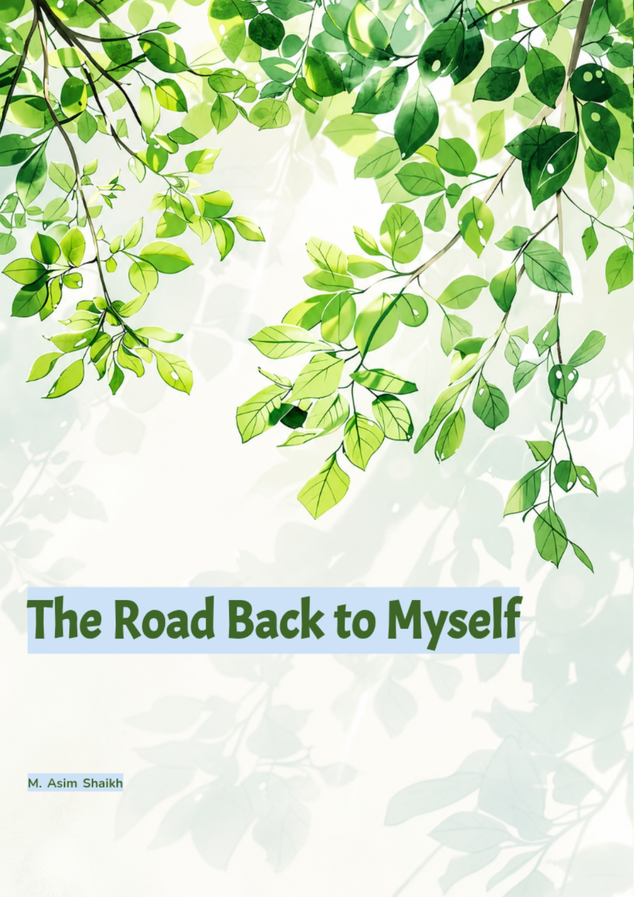

The Fog That Was Never Mine
For as long as I can remember, I carried a weight I couldn't name. It was in my chest, in my stomach, in the way I saw the world. I couldn't trust my own mind, couldn't silence the voices, couldn't even trust the people who were supposed to love me. My family tried, they really did, but they couldn't understand what was happening inside me. And their attempts to help often ended in chaos, leaving all of us more broken than before. I was diagnosed with schizophrenia. The label felt like a life sentence. I was put on medication after medication, each one promising relief, but each one leaving me more disconnected, more numb, more lost. The world felt like a trap, and my mind felt like the worst prison of all.
The Medications: A Temporary Silence
Over the years, I was on a mix of psychiatric drugs, mirtazapine, sertraline, fluoxetine, olanzapine. They were prescribed with good intentions, but they didn't heal me. They silenced me. They numbed the pain without addressing the root. I was still struggling, still anxious, still hearing voices, but now I was also exhausted, bloated, and emotionally flattened. The withdrawal was brutal. Anxiety, brain fog, gut chaos, emotional instability that felt like it would never end. There were days I genuinely believed I was permanently damaged. I thought I'd never feel like myself again, whoever that even was anymore.
The Turning Point: A New Understanding
Then something happened. I came across the concept of the gut-brain axis, the scientific understanding that our digestive system and our brain are in constant communication through nerves, hormones, and immune signals. When your gut is inflamed, your brain feels it. When your brain is stressed, your gut suffers. It's a loop. But here's what I learned: you can flip the loop. I realised I couldn't control my environment. I couldn't change the people around me or escape the triggers. But I could control what I put into my body. I could start small, not because I was brave, but because I was desperate and sick of being a passenger in my own body.
The Work: Healing the Gut, Calming the Mind
I started with real, nourishing food. Bone broth to soothe the lining of my gut. Ginger and peppermint to ease bloating and sluggish digestion. Chamomile to calm inflammation. Probiotics to rebuild my microbiome. Apple cider vinegar to support stomach acid. Frankincense gum to bring down systemic inflammation. These weren't dramatic changes. They were small, steady acts of care. And slowly, my body started to respond. I also started paying attention to the things modern life had pushed aside, morning sunlight to reset my body clock, deep breathing to calm my nervous system, gentle walks without rushing anywhere. I began to understand that healing wasn't about finding the right pill. It was about creating the conditions for my body to heal itself.
The Weapons: Contentment, Hope, and Letting Go
One of the most important lessons I learned was to make peace with where I was. Not giving up, just accepting. When I stopped fighting my reality and started trusting that I was exactly where I needed to be, something shifted. I learned to be content with what was, to hope for the best, and to never despair. Hope became the ground beneath my feet. Not a rope I clung to, but a steady foundation I could stand on. And that shift changed everything.
The Results: Where I Am Now
Today, I'm in a place I never thought possible. My mind is calmer, my body is stronger, and I have more peace than I ever did on those medications. The voices didn't disappear, but they lost their grip. The paranoia didn't vanish, but I can finally see through it. I learned to talk back to the voices, not to fight them, but to understand them. I still have to take care of myself every day. If I let things slide, my gut, my rest, my mindset, things can start to go downhill. But now I know what that looks like, and I know how to bring myself back. It took time. It took patience. And I had to do it alone, because no one around me really understood. But I'm here now, and I'm grateful for the journey, because it taught me things no medication ever could.
The Work I Do Now: Sharing What I've Learned
I now have continued with my career and I help others who are walking the same road I walked. Friends, family, and people who reach out through my posts on Facebook groups. I share what worked for me and what didn't. Not as a professional, but as someone who's been through the fire and come out the other side. I write. I share. I hold space for people who feel like no one understands. And through it all, I remind them of what I had to learn the hard way: healing is possible.
A Message to Anyone Reading This
If you're still in the thick of it, still tired, still scared, still waiting for something to change, I want you to know: you're not broken. You're not damaged. You're just waking up from a fog that was never yours to carry. Healing won't happen overnight. It won't be a straight line. But with patience, with care, and with a willingness to listen to your body, it will come.